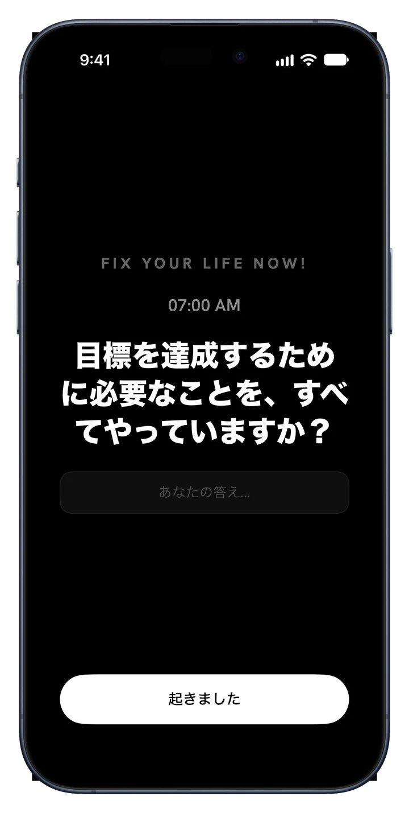
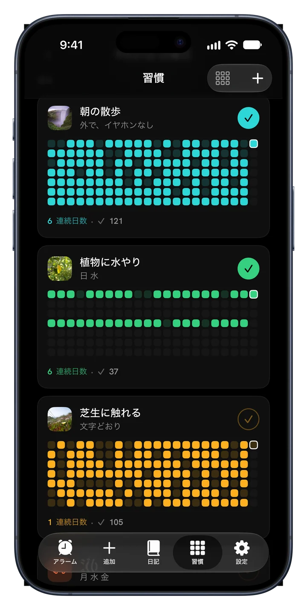
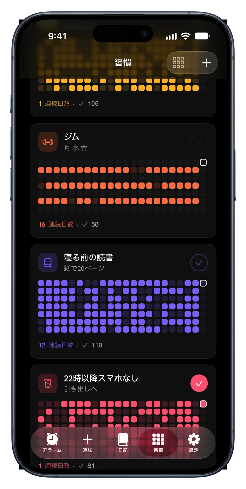
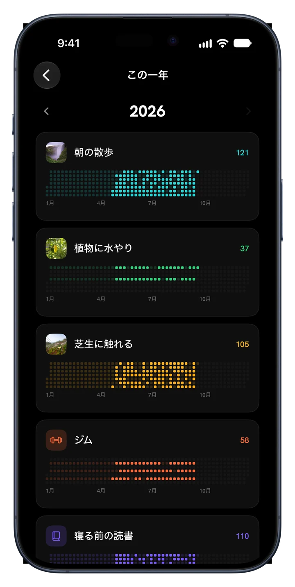
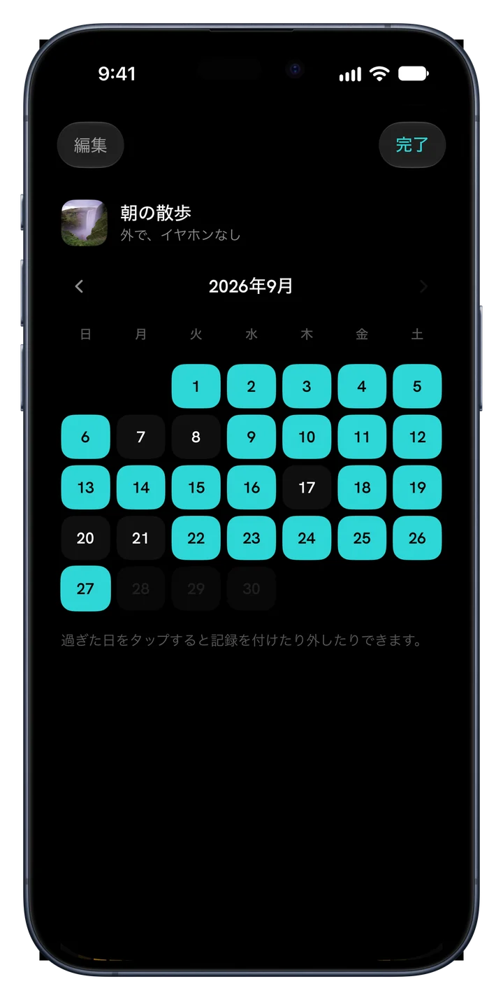
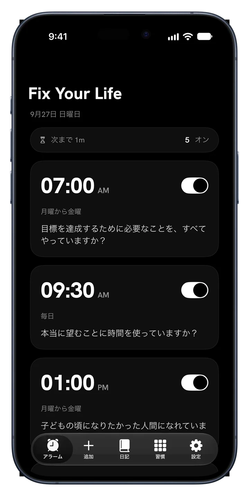
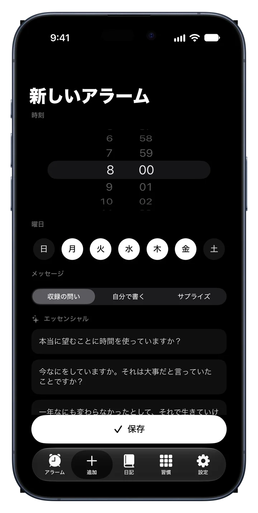
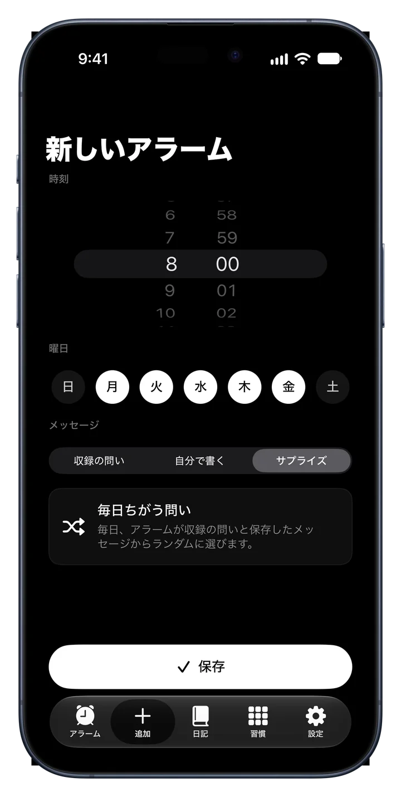
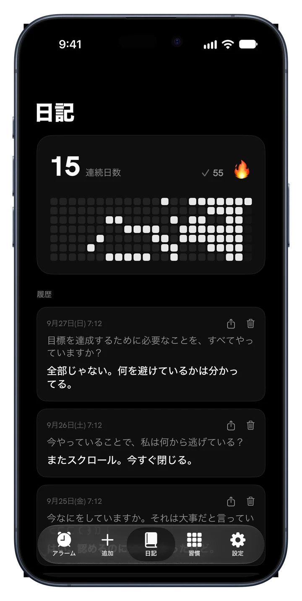
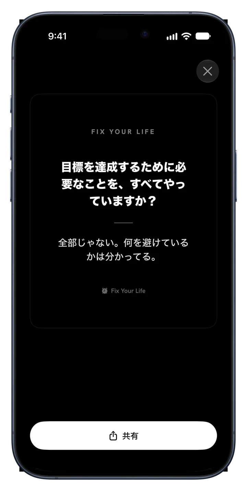

朝の散歩
毎日半年、1日1マス
Fix Your Life は先延ばしできない問いであなたを起こし、決めたことを続ける手助けをします。自分の写真付きの習慣、連続記録、そして一年まるごとカラーで。
無料ダウンロード · アラーム1件と習慣1件はずっと無料 · 広告なし。永遠に。



新機能 · 習慣
本当に続けたいことを追加しましょう。ひとつずつに顔を与え、チェックして、連続記録がその色で伸びていくのを見届けて。


半年、1日1マス
半年、1日1マス
半年、1日1マス
アプリの中身
どの画面も目的はひとつ。あなたを自分の人生に目覚めさせること。

意味のあるアラーム
好きな時間、好きな曜日にアラームを設定。止めて忘れる音ではなく、問いと一緒に鳴ります。1行で答えれば、一日が正直に始まります。

34の問い · 6つのパック
エッセンシャル、野心、時間と死、アイデンティティ、正直な鏡、生きている実感。これはアファメーションではありません。あなたが避けてきた問いです。自分で書くこともできます。

サプライズモード
繰り返しは雑音になります。サプライズモードは曜日ごとに新しい問いを選ぶので、アラームが鈍ることはありません。

先に問いかける日記
答えは問いと日付と一緒に保存されます。連続記録、ヒートマップ、履歴がそろい、継続が目に見えるものになります。

ウィジェット
連続記録と今日の問い。最初に目に入るのは、あなたが避けてきたこと。

成果をシェア
どの答えもすっきりしたカードにしてどこにでもシェア。答えはあなたが向き合った証拠で、いくつかは日の目を見るに値します。
使い方
最初の1分が終わる前にプランが完成します。
朝、自己規律、健康、集中、スクリーンタイム、睡眠。それをもとにプランを作ります。
時間を選ぶだけ。選んだことに合う問いと一緒に毎日鳴ります。
小さく、毎日、あなたのもの。写真を付けて、色を選んで、チェック。
続けた日はマスが灯る。休めば、それが見える。続ければ、一年が色で埋まる。
料金
アラーム1件と習慣1件はすべての機能付きでずっと無料。Premium は一日まるごと回したい人のためのものです。
$0 ずっと
カード登録もお試しも不要
$17.99 / 年
3日間無料 · 週あたり約 $0.35
$39.99 一回
一回払い、サブスクなし
週額 $4.99 のプランもあります。 価格は米ドル表示で、App Store ではお住まいの国の価格が表示されます。 無料お試しは年額プランの新規登録者が対象です。
よくある質問
「もし誰かがあなたの人生の直近2時間を撮影したら、その人はあなたが言う通りのものを本当に望んでいると思うでしょうか？」
朝にひとつの問い。一日にひとつのマス。そうして一年が色を変えていきます。
ダウンロードはApp Store無料ダウンロード · 45言語 · 広告なし。永遠に。